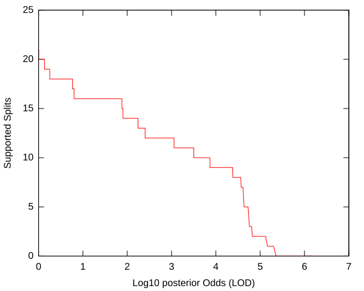
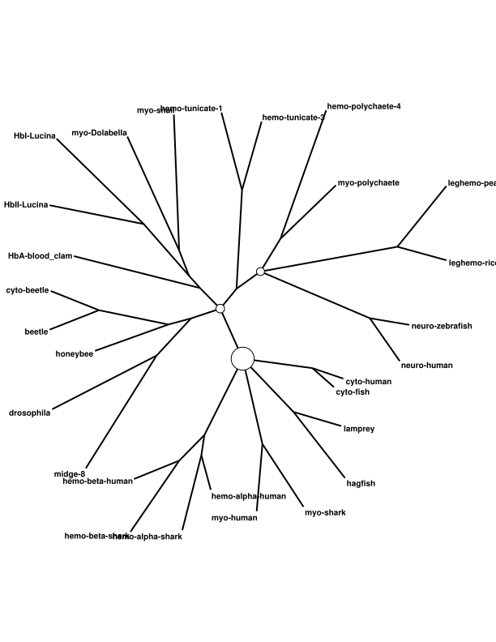
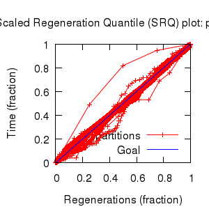
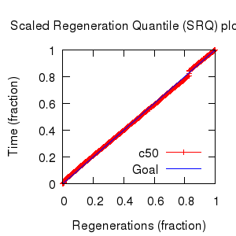

MCMC Post-hoc Analysis: 28 sequences
| Partition | Sequences | Lengths | Alphabet | Substitution Model | Indel Model | Scale Model |
|---|
| 1 |
few-globins.fasta |
141 - 190 |
Amino-Acids | S1 = lg08+f+Rates.free[,,5] |
I1 = rs07 |
scale1 ~ gamma[0.5,2,0.0] |
| Statistic | Median | 95% BCI | ACT | ESS | burnin | PSRF-CI80% | PSRF-RCF |
|---|
| prior |
-613.3 |
(-665.9, -565.4) |
52.27 |
27550 |
546
|
1 | 1.001
|
| prior_A1 |
-687.9 |
(-737.8, -643.9) |
30.76 |
46821 |
511
|
1 | 0.9998
|
| likelihood |
-9437 |
(-9468, -9405) |
14.62 |
98510 |
267
|
1 | 0.9989
|
| posterior |
-1.005e+04 |
(-1.01e+04, -1.001e+04) |
47.41 |
30371 |
527
|
1 | 1.001
|
| Heat.beta |
1 |
| | | | | |
| Scale[1] |
18.73 |
(13.5, 24.91) |
1.114 |
1293017 |
97
|
1 | 1.001
|
| f:pi[A] |
0.1176 |
(0.1049, 0.1305) |
8.036 |
179197 |
417
|
1 | 0.9978
|
| f:pi[R] |
0.02774 |
(0.02181, 0.03407) |
7.962 |
180856 |
597
|
1 | 0.9982
|
| f:pi[N] |
0.03775 |
(0.03092, 0.04484) |
8.343 |
172597 |
752
|
1 | 1.007
|
| f:pi[D] |
0.05673 |
(0.04747, 0.06638) |
8.624 |
166971 |
543
|
1 | 1
|
| f:pi[C] |
0.01395 |
(0.008829, 0.01973) |
8.123 |
177282 |
366
|
1 | 0.9966
|
| f:pi[Q] |
0.03315 |
(0.02712, 0.03956) |
8.32 |
173085 |
472
|
0.9999 | 0.9987
|
| f:pi[E] |
0.05943 |
(0.05054, 0.06868) |
8.839 |
162919 |
338
|
1 | 0.9973
|
| f:pi[G] |
0.08618 |
(0.07299, 0.09971) |
8.592 |
167590 |
467
|
0.9999 | 0.9956
|
| f:pi[H] |
0.02686 |
(0.02087, 0.0333) |
8.084 |
178131 |
288
|
1 | 1.003
|
| f:pi[I] |
0.03898 |
(0.03174, 0.04665) |
8.49 |
169613 |
297
|
1 | 1.002
|
| f:pi[L] |
0.08829 |
(0.07516, 0.102) |
8.999 |
160020 |
602
|
1 | 1.001
|
| f:pi[K] |
0.07095 |
(0.06064, 0.08171) |
9.067 |
158816 |
433
|
0.9999 | 1.001
|
| f:pi[M] |
0.02342 |
(0.0181, 0.0291) |
8.241 |
174744 |
644
|
1 | 1.003
|
| f:pi[F] |
0.0412 |
(0.03246, 0.05043) |
8.431 |
170805 |
351
|
1 | 0.9975
|
| f:pi[P] |
0.03843 |
(0.03015, 0.04709) |
8.432 |
170782 |
341
|
0.9999 | 1.002
|
| f:pi[S] |
0.07179 |
(0.06223, 0.08172) |
8.384 |
171755 |
308
|
1 | 1
|
| f:pi[T] |
0.05407 |
(0.04592, 0.06257) |
7.965 |
180784 |
368
|
1 | 1.003
|
| f:pi[W] |
0.01075 |
(0.006137, 0.01604) |
7.914 |
181952 |
508
|
1 | 1
|
| f:pi[Y] |
0.02406 |
(0.01779, 0.03089) |
8.145 |
176793 |
609
|
1 | 1.003
|
| f:pi[V] |
0.07612 |
(0.06549, 0.08701) |
8.609 |
167261 |
403
|
1 | 0.9985
|
| Rates.free:frequencies[1] |
0.06663 |
(0.01614, 0.1426) |
13.14 |
109579 |
327
|
0.9999 | 1.001
|
| Rates.free:frequencies[2] |
0.1919 |
(0.03648, 0.3928) |
6.662 |
216148 |
375
|
1 | 0.9998
|
| Rates.free:frequencies[3] |
0.2302 |
(0.0483, 0.4357) |
4.527 |
318070 |
382
|
1 | 1.001
|
| Rates.free:frequencies[4] |
0.2235 |
(0.0469, 0.4248) |
4.056 |
355073 |
428
|
1 | 1.002
|
| Rates.free:frequencies[5] |
0.2524 |
(0.06324, 0.4427) |
5.96 |
241628 |
286
|
1 | 0.9989
|
| Rates.free:rates[1] |
0.03833 |
(0.008093, 0.06836) |
13.95 |
103260 |
495
|
1 | 1.001
|
| Rates.free:rates[2] |
0.1299 |
(0.08633, 0.1688) |
9.623 |
149649 |
390
|
1 | 1.003
|
| Rates.free:rates[3] |
0.1876 |
(0.1469, 0.2325) |
4.269 |
337303 |
291
|
1 | 0.9998
|
| Rates.free:rates[4] |
0.2601 |
(0.2065, 0.3262) |
5.821 |
247399 |
404
|
1 | 0.9998
|
| Rates.free:rates[5] |
0.3801 |
(0.3105, 0.4522) |
9.173 |
156990 |
260
|
1 | 1
|
| rs07:mean_length |
3.865 |
(3.102, 4.767) |
12.4 |
116172 |
240
|
1 | 0.9988
|
| rs07:log_rate |
-4.452 |
(-4.715, -4.197) |
2.667 |
539868 |
250
|
1 | 0.9979
|
| |A1| |
347 |
(325, 365) |
747.9 |
1925 |
4350 |
0.9388 | 0.9806
|
| #indels1 |
84 |
(77, 91) |
30.48 |
47242 |
546 |
0.8767 | 1
|
| |indels1| |
301 |
(273, 332) |
44.14 |
32624 |
585 |
0.9651 | 0.9953
|
| #substs1 |
2043 |
(2021, 2063) |
287.1 |
5015 |
3108 |
0.9818 | 0.9901
|
| Scale1*|T| |
24.83 |
(22.44, 27.35) |
2.623 |
548967 |
207
|
1 | 1
|
| |A| |
347 |
(325, 365) |
747.9 |
1925 |
4350 |
0.9388 | 0.9806
|
| #indels |
84 |
(77, 91) |
30.48 |
47242 |
546 |
0.8767 | 1
|
| |indels| |
301 |
(273, 332) |
44.14 |
32624 |
585 |
0.9651 | 0.9953
|
| #substs |
2043 |
(2021, 2063) |
287.1 |
5015 |
3108 |
0.9818 | 0.9901
|
| |T| |
1.327 |
(0.9622, 1.739) |
1.018 |
1415236 |
174
|
1 | 1.001
|


| Partition support: Summary |
| Partition support graph: SVG |
Partition 1
|
|
|
Diff |
|
Min. %identity |
# Sites |
Constant |
Informative |
| Initial |
FASTA |
HTML |
Diff |
|
1.26% |
190 |
0 (0%) |
190 (100%) |
| Best (WPD) |
FASTA |
HTML |
|
AU |
8.04% |
356 |
2 (0.562%) |
227 (63.8%) |


- Partition uncertainty
- SRQ plot: partitions
- SRQ plot: c50
- Variation in split frequency estimates
| burnin (scalar) | ESS (scalar) | ESS (partition) | ASDSF | MSDSF | PSRF-CI80% | PSRF-RCF |
|---|
| 4350 | 1925 | 9958.824 | 0.004 | 0.016
| 1 | 1.007 |
command line: bali-phy few-globins.fasta -S LG+Rates.free[n=5] --name few-globins-free5
directory: /gpfs/fs0/data/wraycompute/br51/Work/3.1
| chain # | burnin | subsample | Iterations (after burnin) | subdirectory |
|---|
| 1 |
20000 |
1 |
180000 |
few-globins-free5-1 |
| 2 |
20000 |
1 |
180000 |
few-globins-free5-2 |
| 3 |
20000 |
1 |
180000 |
few-globins-free5-3 |
| 4 |
20000 |
1 |
180000 |
few-globins-free5-4 |
| 5 |
20000 |
1 |
180000 |
few-globins-free5-5 |
| 6 |
20000 |
1 |
180000 |
few-globins-free5-6 |
| 7 |
20000 |
1 |
180000 |
few-globins-free5-7 |
| 8 |
20000 |
1 |
180000 |
few-globins-free5-8 |
| P(data|M) = -9469.685 +- 0.197
|
Complete sample: 75423
topologies |
95% Bayesian credible interval: 29187 topologies |
| topology | ~ uniform on tree topologies |
| branch lengths | ~ iid[num_branches[T],gamma[0.5,div[2,num_branches[T]],0.0]] |
| S1 | = |
lg08+f+Rates.free[,,5]
| f:pi | ~ | dirichlet_on[letters[A],1]
|
| Rates.free:rates | ~ | dirichlet[n,2]
|
| Rates.free:frequencies | ~ | dirichlet[n,3]
|
|
| I1 | = |
rs07
| rs07:log_rate | ~ | laplace[-4,0.707]
|
| rs07:mean_length | ~ | exponential[10,1]
|
|
{kind=link}
{kind=link}
{kind=link}
{kind=link}
{kind=link}
{kind=link}
{kind=link}
{kind=link}
{kind=link}
{kind=link}
{kind=link}
{kind=link}